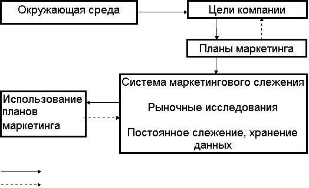
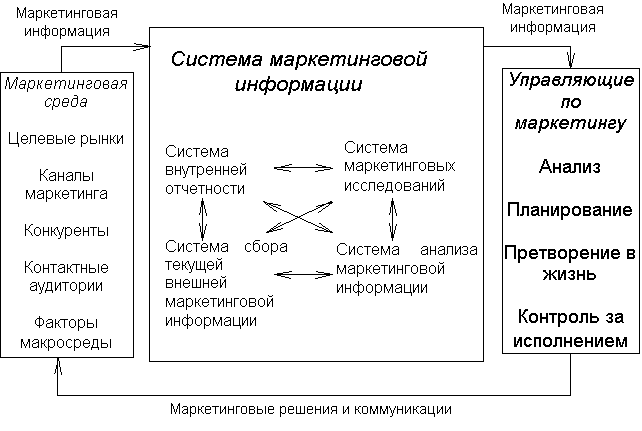
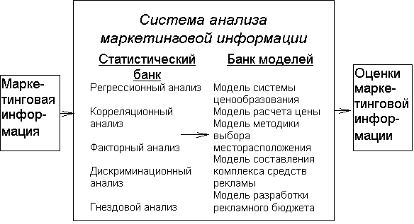
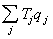

Кафедра 506
МАИ
Реферат
"Информационные
системы маркетинга"
Студентки группы 05-513
Шапошниковой Ирины
Владимировны
Москва, 1997 год.
Комплексное изучение рынка
Роль информации для маркетинговых
исследований.
Маркетинговые информационные системы
Концепция системы
маркетинговой информации
Система внутренней отчетности
Система сбора внешней маркетинговой информации
Система маркетинговых исследований.
Система анализа маркетинговой информации
Схема маркетингового
исследования
Определение проблемы
Анализ вторичной информации
Сбор и анализ первичных данных.
Сбор информации
Анализ собранной информации
Представление полученных результатов.
КРИТЕРИИ ОЦЕНКИ
ИНФОРМАЦИОННОГО БИЗНЕСА
ОСОБЕННОСТИ
ЦЕНООБРАЗОВАНИЯ ПРОГРАММНЫХ ПРОДУКТОВ
В современной концепции маркетинга изучению рынков
придается особое значение. Эти исследования служат основой разрабатываемой
предприятием стратегии и тактики выступления на рынках, проведения
целенаправленной товарной политики.
Цель любого рыночного исследования состоит в оценке
существующей ситуации (конъюнктуры) и разработка прогноза развития рынка.
Программа такого комплексного изучения зависит от особенности товаров,
характера деятельности предприятия, масштаба производства экспортных товаров и
ряда других факторов.
Исследование рынка - не самоцель, а источник информации
для принятия эффективного управленческого решения. Это решение может относиться
к любому аспекту внешнеторговой и маркетинговой деятельности, поэтому
нерационально ограничивать расходы на такие исследования по причине «экономии
средств»: потери, вызванные неверным решением, бывают обычно в 10 - 100 раз
большими.
Использование маркетинговых исследований широко
варьируется в зависимости от компании и типа требуемой информации. Несмотря на то,
что большинство фирм проводит их в той или иной форме, исследовательские отделы
создаются скорее в крупных, чем в небольших фирмах. Обычно американская фирма с
годовым объемом сбыта в 25 млн. Долларов и более расходует около 3.5 % своего
маркетингового бюджета, в то время как компания с продажами менее 25 млн.
Долларов расходует около 1.5 %. Кроме того, компании, производящие
потребительские товары, расходуют на маркетинговые исследования больше средств,
чем фирмы, выпускающие продукцию производственного назначения.
Чтобы должным образом функционировать в условиях
маркетинга, необходимо получать адекватную информацию до и после принятия
решений. Существует множество причин, в силу которых маркетинговая информация
должна собираться при разработке, реализации
и пересмотре маркетингового плана фирмы или каких-либо его элементов.
Недостаточно опираться на интуицию суждения руководителей и опыт прошлого.
Хорошая информация позволяет маркетологам:
·
получать конкретные
преимущества
·
снижать финансовый риск
и опасности для образца
·
определить отношения
потребителей
·
следить за внешней
средой
·
координировать стратегию
·
оценивать деятельность
·
повысить доверие к
рекламе
·
получить поддержку в
решениях
·
подкрепить интуицию
·
улучшить эффективность.
Если подходить к сбору маркетинговой информации как к
случайному, редкому событию, которое необходимо только тогда, когда нужно
получить данные по конкретному вопросу, можно столкнуться с рядом проблем.
Например, может возникнуть ситуация, когда:
· результаты предыдущих исследований хранятся в
неудобном для использования виде;
· незаметны изменения в окружающей среде и действиях
конкурентов;
· проводится несистематизированный сбор информации;
· возникают задержки при необходимости проведения
нового исследования;
· по ряду временных периодов отсутствуют данные,
необходимые для анализа;
· маркетинговые планы и решения анализируются
неэффективно;
· действия представляют собой лишь реакцию, а не
предвидение.
Маркетинговые исследования надо рассматривать как часть
постоянно действующего интегрированного информационного процесса. Необходимо,
чтобы фирма разрабатывала и использовала систему постоянного слежения за
окружающей средой и хранения данных с тем, чтобы они могли анализироваться в
будущем. Маркетинговую информационную систему можно определить как совокупность
процедур и методов, разработанных для создания, анализа и распространения
информации для опережающих маркетинговых решений на регулярной постоянной
основе.
На
рис. 1 показана схема маркетинговой информационной системы.

воздействие
обратная связь
Рис. 1
Сначала
фирма устанавливает цели компании, определяющие общие направления планирования
маркетинга. На эти цели воздействуют факторы окружающей среды (конкуренция,
правительство, экономика). Планы маркетинга включают контролируемые факторы,
определенные в предыдущих разделах, включая выбор целевого рынка, целевого
маркетинга, тип организации маркетинга, маркетинговую стратегию (товар или
услуга, распределение, продвижение и цена) и управление.
Когда
план маркетинга определен, с помощью информационной сети, которая включает
исследования, постоянное наблюдение и сбор данных, можно конкретизировать и
удовлетворять общие потребности маркетинговых служб в информации. Маркетинговое
исследование дает точную информацию для решения исследовательских проблем. Для
него может понадобиться хранящаяся информация (внутренние вторичные данные) или
сбор внешней вторичной и/или первичной информации. Постоянное наблюдение - это
процедура, посредством которой регулярно анализируется меняющаяся окружающая
среда. Оно может включать изучение бюллетеней новостей, регулярное получение
информации от сотрудников и потребителей, присутствие на отраслевых заседаниях
и наблюдение за действиями конкурентов. Хранение данных - это накопление всех
видов значимой внутрифирменной информации (такой, как объем продаж, издержки,
работа персонала и т.д.), а также информации, собранной через маркетинговые
исследования и постоянное наблюдение. Эти данные помогают принимать решения и
хранятся для дальнейшего использования.
В
зависимости от ресурсов фирмы и сложности информационных потребностей маркетинговая
информационная сеть может быть компьютеризированной или нет. Небольшие фирмы
могут эффективно использовать такие системы и без компьютеров. Необходимые
составляющие успеха любой системы - последовательность, тщательность и хорошая
техника хранения.
Планы
маркетинга следует реализовать на основе данных, полученных из информационной
сети. Например, в результате постоянного наблюдения фирма может прийти к
выводу, что стоимость сырья возрастет на 7% в течение следующего года. Это даст
компании время изучить варианты маркетинга (переход на заменители,
перераспределение издержек, принятие дополнительных расходов) и выбрать одну из
альтернатив для реализации. Если наблюдения не было, то фирма может быть
застигнута врасплох и принять на себя дополнительные издержки без какого-либо
выбора.
В
целом маркетинговая информационная система дает множество преимуществ:
· организованный сбор информации;
· избежание кризисов;
· координация плана маркетинга;
· скорость;
· результаты, выражаемые в количественном виде;
· анализ издержек и прибыли.
Однако создание маркетинговой информационной системы
может быть непростым делом. Велики первоначальные затраты времени и людских
ресурсов, большие сложности могут быть сопряжены с созданием системы.
В XIX веке
Большинство фирм были мелкими и их работники знали своих клиентов лично.
Управляющие собирали маркетинговую информацию, общаясь с людьми, наблюдая за
ними, задавая вопросы.
В XX веке
усилились три тенденции, обусловившие необходимость получения более обширной и
более доброкачественной маркетинговой информации:
1. Переход от маркетинга на
местном уровне к маркетингу в общенациональном масштабе.
Фирма постоянно расширяет
территорию своего рынка, и ее управляющие уже не знают всех клиентов
непосредственно. Требуется найти какие-то другие пути сбора маркетинговой
информации.
2. Переход от покупательских
нужд к покупательским потребностям.
По мере роста своих доходов
покупатели становятся все более разборчивыми при выборе товаров. Продавцам все
труднее предсказывать реакцию покупателей на различные характеристики,
оформление и прочие свойства товаров, и они обращаются к маркетинговым
исследованиям.
3. Переход от конкуренции в
ценах к неценовой конкуренции.
Продавцы все шире пользуются
неценовыми орудиями маркетинга, такими, как присвоение товарам марочных
названий, индивидуализация товаров, реклама и стимулирование сбыта, и им нужна
информация о том, как реагирует рынок на использование этих орудий.
Несмотря на то, что продавцам
требуется все больше маркетинговой информации, ее не хватает. Деятели рынка
жалуются, что не могут собрать достаточного количества нужных им точных и
полезных сведений. В попытках разрешить эту проблему многие фирмы разрабатывают
особые системы маркетинговой информации (СМИ).
Система маркетинговой
информации - постоянно действующая система взаимосвязи людей, оборудования и
методических приемов, предназначенная для сбора, классификации, анализа, оценки
и распространения актуальной, своевременной и точной информации для
использования ее распорядителями сферы маркетинга с целью совершенствования
планирования, претворения в жизнь и контроля за исполнением маркетинговых
мероприятий. Концепцию системы маркетинговой информации можно представить в
виде схемы.

В левом прямоугольнике
перечислены составляющие маркетинговой среды, за которыми управляющий по
маркетингу должен вести постоянное наблюдение. Информацию собирают и
анализируют с помощью четырех вспомогательных систем, которые в совокупности
своей и составляют систему маркетинговой информации: системы внутренней
отчетности, системы сбора внешней текущей маркетинговой информации, системы
маркетинговых исследований и системы анализа маркетинговой информации. Поток
информации, поступающей к управляющим по маркетингу, помогает им в проведении
анализа, планирования, претворении в жизнь и контроля за исполнением
маркетинговых мероприятий. Обратный поток в сторону рынка состоит из принятых
управляющими решений и прочих коммуникаций.
Рассмотрим более подробно все четыре вспомогательные
системы, составляющие систему маркетинговой информации.
У любой фирмы существует внутренняя
отчетность, отражающая показатели текущего сбыта, суммы издержек, объемы
материальных запасов, движения денежной наличности, данные о дебиторской и
кредиторской задолженности. Применение ЭВМ позволило фирмам создать
великолепные системы внутренней отчетности, способные обеспечить информационное
обслуживание всех своих подразделений.
Собранная
информация должна облегчать управляющим по марочным товарам
для принятия решения о
размере ассигнований на рекламу необходимо знать данные о числе людей, уже
осведомленных о марке, знать размеры рекламных бюджетов и стратегические
установки конкурентов, относительную эффективность рекламы в комплексе мер по
стимулированию и т.п.
Система сбора внешней текущей маркетинговой информации
обеспечивает руководителей информацией о самых последних событиях. Это набор
источников и методических приемов, посредством которых руководители получают
повседневную информацию о событиях, происходящих в коммерческой среде.
Руководители
собирают внешнюю текущую маркетинговую информацию, читая книги, газеты и
специализированные издания, беседуя с клиентами, поставщиками, дистрибьюторами
и прочими лицами, не относящимися к штатным работникам фирмы, а также
обмениваясь сведениями с другими управляющими и сотрудниками самой фирмы.
Хорошо организованные фирмы принимают дополнительные меры, чтобы повысить
качество и увеличить количество собираемой внешней текущей информации.
Во-первых, они обучают и поощряют своих продавцов фиксировать происходящие
события и сообщать о них. Ведь торговые агенты - это «глаза и уши» фирмы. Они
находятся в исключительно выгодном положении для сбора сведений, которых не
получишь никакими другими методами.
Во-вторых,
фирма поощряет дистрибьюторов, розничных торговцев и прочих своих союзников
передавать ей важные сведения. В некоторых фирмах специально назначают специалистов,
ответственных за сбор внешней текущей маркетинговой информации. В частности,
фирмы высылают на места так называемых «мнимых» покупателей, которые следят за
персоналом розницы. О конкурентах можно многое узнать:
а)
приобретая их товары;
б)
посещая «дни открытых дверей» и специализированные выставки;
в)
читая публикуемые ими отчеты и присутствуя на собраниях акционеров;
г)
беседуя с бывшими и нынешними служащими конкурирующих организаций, их дилерами,
дистрибьюторами, поставщиками, и агентами по фрахтовым операциям;
д)
собирая их рекламу;
е)
читая газеты и документы профессиональных ассоциаций.
В-третьих,
фирма покупает сведения у сторонних поставщиков внешней текущей информации. Для
получения подборок рекламы конкурентов, сведений об их затратах на рекламу и
наборе используемых ими средств рекламы прибегают к платным услугам бюро
вырезок.
В-четвертых,
ряд фирм имеют специальные отделы по сбору и распространению текущей
маркетинговой информации. Сотрудники этих отделов помогают управляющим в оценке
вновь поступающей информации. Подобные службы позволяют резко повысить качество
информации, поступающей к управляющим по маркетингу.
Определенные
ситуации управляющим по маркетингу нужно изучать подробно. Зачастую управляющие
не могут ждать поступления информации по частям. Некоторые ситуации требуют
проведения формального исследования. А поскольку у управляющего нет, как
правило, ни времени, ни умения для получения такой информации собственными
силами, проведение формального маркетингового исследования нужно заказывать.
Маркетинговые
исследования - систематическое определение круга данных, необходимых в связи со
стоящей перед фирмой маркетинговой ситуацией, их сбор, анализ и отчет о
результатах.
Фирма
может заказать проведение маркетинговых исследований несколькими способами.
Мелкая фирма может обратиться с просьбой планировать и провести такое
расследование к студентам или преподавателям местного учебного заведения, а
может и нанять для этого специализированную организацию. Многие крупные
компании (более 73%) имеют собственные отделы маркетинговых исследований. В
таком отделе может быть от одного до нескольких десятков сотрудников.
Управляющий службой маркетинговых исследований обычно подчиняется
вице-президенту по маркетингу и выполняет функции руководителя исследований,
администратора, консультанта и защитника интересов фирмы. Среди сотрудников
отдела - разработчики планов исследований, статистики, социологии, психологии,
специалисты по моделированию.
Исследователи
маркетинга постоянно расширяют поле своей деятельности (см. Таблицу 1).
Вот
наиболее типичные решаемые ими задачи:
1. изучение характеристик рынка;
2. замеры потенциальных возможностей рынка;
3. анализ распределения долей рынка между фирмами;
4. анализ сбыта;
5. изучение тенденций деловой активности;
6. изучение товаров конкурентов;
7. краткосрочное прогнозирование;
8. изучение реакции на новый товар и его потенциала;
9. долгосрочное прогнозирование;
10. изучение
политики цен.
Таблица 1.
Виды маркетинговых исследований
|
Сфера и
вид исследования |
Процент фирм, проводящих исследования |
|
1. Реклама |
|
|
Исследование потребительских мотиваций |
48 |
|
Исследование рекламных текстов |
49 |
|
Изучение средств рекламы |
61 |
|
Изучение эффективности рекламных объявлений |
67 |
|
2. Коммерческая деятельность и ее
экономический анализ |
|
|
Краткосрочное прогнозирование |
85 |
|
Долгосрочное прогнозирование |
82 |
|
Изучение тенденций деловой активности |
86 |
|
Изучение политики цен |
81 |
|
Изучение принципов расположения предприятий и складов |
71 |
|
Изучение товарной номенклатуры |
51 |
|
Изучение международных рынков |
51 |
|
Система информирования руководства |
72 |
|
3. Ответственность фирмы |
|
|
Изучение проблем информирования потребителей |
26 |
|
Изучение воздействия на окружающую среду |
33 |
|
Изучение законодательных ограничений в области рекламы и
стимулирования |
51 |
|
Изучение общественных ценностей и проблем социальной политики |
40 |
|
4. Разработка товаров |
|
|
Изучение реакции на новый товар и его потенциала |
84 |
|
Изучение товаров конкурентов |
85 |
|
Тестирование товаров |
75 |
|
Изучение проблем создания упаковки |
60 |
|
5. Сбыт и рынки |
|
|
Замеры потенциальных возможностей рынка |
93 |
|
Анализ сбыта |
89 |
|
Определение квот и территорий сбыта |
75 |
|
Изучение каналов распределения |
69 |
|
Пробный маркетинг |
54 |
|
Изучение стратегий стимулирования сбыта |
52 |
Система
анализа маркетинговой информации - набор совершенных методов анализа
маркетинговых данных и проблем маркетинга. Однако ряд фирм считает подобный
подход либо чересчур техническим, либо чересчур академическим.
Основу
любой системы анализа маркетинговой информации составляют статистический банк и
банк моделей.

Рис. 2
Статистический
банк - совокупность современных методик статистической обработки информации,
позволяющих наиболее полно вскрыть взаимосвязи в рамках подборки данных и установить
степень их статистической надежности. Эти методики позволяют руководству
получать ответы на вопросы типа:
-
Что представляют собой основные переменные, оказывающие влияние на мой сбыт, и
какова значимость каждой из них?
-
Что произойдет со сбытом, если цену товара поднять на 10%, а расходы на рекламу
- на 20%?
-
Какие черты являются наиболее вероятными показателями того, что данные
потребители будут покупать мой марочный товар, а не товар конкурента?
-
По каким переменным лучше всего сегментировать мой рынок, и сколько его
сегментов существует?
Эти
методики статистической обработки информации описаны во многих источниках.
Банк
моделей - набор математических моделей, способствующих принятию более
оптимальных маркетинговых решений деятелями рынка. Каждая модель состоит из
совокупности взаимосвязанных переменных, представляющих некую реально
существующую систему, некий реально существующий процесс или результат. Эти
модели могут способствовать получению ответов на вопросы типа «а что, если?» и
«что лучше?». За последние двадцать лет ученые сферы маркетинга создали
огромное количество моделей, призванных помогать руководителям маркетинга лучше
справляться с деятельностью по установлению границ территорий сбыта и планов
коммивояжерской работы, выбору местоположения розничных торговых точек, подбору
оптимального комплекса средств рекламы и прогнозированию сбыта товарных
новинок.
На
этом можно завершить обзор четырех основных вспомогательных систем, входящих в
состав системы маркетинговой информации, и перейти к рассмотрению схемы
маркетингового исследования.
Чтобы
понять клиентов фирмы, ее конкурентов, дилеров и т.п., ни одному деятелю рынка
не обойтись без маркетинговых исследований. Управляющий по марочному товару в
крупной компании ежегодно заказывает проведение трех-четырех таких
исследований. Управляющие по маркетингу фирм помельче делают это реже. Все
большее число некоммерческих организаций обнаруживают, что им тоже нужны
маркетинговые исследования. Больница хочет знать, положительно ли настроены к
ней лица, живущие в зоне ее обслуживания. Колледж старается выяснить, какой
образ он имеет в глазах школьных консультантов по профориентации. Политическая
организация желает установить, что думают избиратели о ее кандидатах.
Управляющие,
прибегающие к маркетинговым исследованиям, должны быть достаточно хорошо
знакомы с их спецификой, чтобы уметь получать нужную информацию по приемлемой
цене. В противном случае они могут допустить сбор ненужной информации, или
нужной информации, но с непомерно высокими издержками, или неправильно
истолковать полученные результаты. Управляющие могут привлекать
высококвалифицированных исследователей, ибо в их собственных интересах получать
информацию, которая позволяет принимать правильные решения. Столь же важно,
чтобы управляющие достаточно хорошо знали технологию проведения маркетингового
исследования и могли легко участвовать в его планировании и последующей
интерпретации полученной информации.
Процесс
маркетингового исследования включает ряд операций:
1. определение проблемы;
2. анализ вторичной информации;
3. получение первичной информации;
4. анализ данных;
5. рекомендации;
6. использование результатов.
Все действия выполняются в определенном порядке.
Например, вторичная информация не изучается до тех пор, пока фирма не определит
проблему или вопрос, который должен быть изучен, а первичная информация не
собирается до тех пор, пока не будет тщательно изучена вторичная. Первичные
данные нужны не всегда, во многих случаях фирмы способны разрешить свои проблемы
и без них. Только если вторичная информация окажется недостаточной, фирма
должна собрать первичные данные.
Определение проблемы - это формулирование предмета
маркетингового исследования. Без этого можно собрать ненужную и дорогостоящую
информацию и скорее запутать, чем прояснить проблему. Хорошее выполнение этой
операции ориентирует на сбор и анализ конкретной информации, нужной для
принятия решения.
Если исследователь точно не знает, что нужно изучить,
следует провести предварительную проработку. Ее цель - четко определить
проблему, используя информационный анализ. После этого должно быть проведено
заключительное исследование - структурированный сбор данных и анализ для
решения конкретной задачи или достижения конкретной цели.
Вторичная информация представляет собой данные, собранные
ранее для целей, отличных от связанных с решением исследуемой проблемы.
Независимо от того, достаточна ли она для решения, ее низкая цена и
относительно быстрая доступность требуют, чтобы первичные данные не собирались
до завершения тщательного поиска вторичной информации. Чтобы оценить ее общую
ценность, исследователь должен сопоставить ее достоинства и недостатки.
Вторичная информация обладает следующими достоинствами:
·
Многие ее виды недороги,
поскольку не нужен сбор новых данных.
·
Информация обычно
собирается быстро.
·
Часто имеется несколько
источников информации, что позволяет выявлять различные доходы, сопоставлять
данные.
·
Источники информации
могут содержать данные, которые фирма не может сама получить.
·
Информация, собранная из
независимых источников, как правило, весьма достоверна.
Однако у вторичной информации
имеется и целый ряд недостатков:
·
Имеющаяся информация
может не подходить для целей проводимого исследования в силу своей неполноты
или общего характера.
·
Информация может быть
старой или устаревшей.
·
Могут публиковаться не
все результаты исследования.
·
Могут существовать
противоречивые данные, что может потребовать сбора новой, первичной информации.
Фирмам, действующим на внешнем рынке, необходимо
создавать собственные бани данных по всем вопросам, на которые приходится
отвечать во время маркетингового анализа, так как маркетинговый анализ - не
разовое мероприятие, а регулярно повторяющаяся работа, на которую следует не
жалеть времени.
Определим источники вторичной информации. Сначала
рассмотрим источники внутренней вторичной информации.
До того, как начать расходовать время и средства на поиск
внешней вторичной информации или сбор первичных данных, исследователь должен
изучить информацию внутри компании:
- планы и исполнение финансовых планов (бюджетов);
- данные о сбыте;
- данные о прибылях и убытках;
- счета клиентов;
- данные о запасах;
- результаты предыдущих исследований;
- письменные сообщения (текущая информация);
- жалобы потребителей, стандарты для определения
результативности и др.
Если исследовательская проблема не была разрешена с
помощью внутренней информации, фирма должна использовать внешние источники -
правительственные и неправительственные:
- периодические издания;
- книги, монографии и другие непериодические публикации;
- коммерческие исследовательские организации.
Первичные данные представляют собой только что полученную
информацию для решения конкретной исследуемой проблемы или вопроса. Они
необходимы в тех случаях, когда доскональный анализ вторичных сведений не дает
необходимую информацию.
До непосредственного сбора первичных данных необходимо
разработать структуру или план исследования, используемый в качестве
руководства для сбора и анализа данных.
Структура
исследования включает ответы на следующие вопросы:
· Кого или что следует исследовать?
Исследователь должен определить, что будет объектом
его внимания.
· Какая информация должна собираться?
Виды и объемы нужной информации определяются тем, как
компания сформулировала задачи. Предварительные исследования требуют меньшего
объема информации, чем окончательные.
· Кто собирает данные?
· Какие методы сбора данных следует использовать?
Существует четыре основных метода сбора первичных
данных: опрос, наблюдение, эксперимент и имитация.
· Сколько будет стоить исследование?
Издержки исследования следует сравнить с
преимуществами, которые будут получены в результате.
· Как будут собираться данные?
Следует определить необходимый для сбора данных
персонал, в том числе его возможности, квалификацию и подготовку.
· Насколько длительным будет период сбора данных?
Исследователь должен определить, сколько времени он
затратит на исследование, иначе оно может затянуться. Это может привести к
несопоставимости ответов и нарушению секретности. Быстро можно провести опросы
личные и по телефону. Опросы по почте, наблюдения и эксперименты требуют
гораздо больше времени. Тем не менее временные границы должны быть установлены.
·
Когда и где следует
собирать информацию?
День и время сбора информации должны быть определены.
Кроме того, необходимо установить место проведения исследования. Исследователь
должен соразмерить срочность и удобство с желанием изучить труднодоступных лиц
в подходящее время.
Определим достоинства и недостатки первичной информации.
К достоинствам относится то, что:
1. Первичная информация собирается в соответствии с
точными целями данной исследовательской задачи, этому соответствуют единицы
измерения и степень детализации.
2. Методология сбора данных контролируется и известна компании.
3. Все результаты доступны для компании, которая может
обеспечить их секретность для конкурентов.
4. Отсутствуют противоречивые данные из разных
источников.
5. Может быть определена надежность информации.
6. Если вторичная информация не отвечает на все вопросы,
то сбор и анализ первичных данных - единственный способ.
К недостаткам можно отнести то, что:
1. Сбор первичных данных может занять много времени
(например, пробный маркетинг может потребовать до шести месяцев).
2. Могут потребоваться большие затраты.
3. Некоторые виды информации не могут быть получены
(например, данные переписи).
4. Подход компании может носить ограниченный характер.
5. Фирма может быть неспособной собирать первичные
данные.
Разработав проект исследования, необходимо собрать
информацию. Как правило, это самый дорогой и чреватый ошибками этап
исследования. При проведении опросов встают сразу четыре крупные проблемы.
Некоторых опрашиваемых может не оказаться ни дома, ни на работе, и попытку
вступить с ними в контакт придется повторять. Другие могут оказаться
участвовать в опросе. Третьи могут отвечать пристрастно или неискренне. И,
наконец, пристрастным и неискренним может оказаться сам ведущий опрос.
При проведении экспериментов исследователям нужно
внимательно следить за соответствием друг другу экспериментальных и контрольных
групп, не оказывать на участников влияния своим присутствием, давать инструкции
совершенно единообразным способом и следить за соблюдением всех прочих условий.
Следующий этап маркетингового исследования - извлечение
из совокупности полученных данных наиболее важных сведений и результатов.
Исследователь сводит полученные данные в таблицы. На основе этих таблиц выводят
или рассчитывают такие показатели, как распределение частотности, средние
уровни и степень рассеяния. Затем исследователь в надежде получить
дополнительную информацию обрабатывает полученные данные с помощью современных
статистических методик и моделей принятия решений, применяемых в системе
анализа маркетинговой информации.
Исследователь не должен ошеломить управляющих по
маркетингу количеством и изощренностью использованных им статистических
методик. Это только запутает управляющих. Надо представить основные результаты,
нужные руководству фирмы для принятия главных, насущных маркетинговых решений.
Исследование полезно, когда оно содействует уменьшению неопределенности, с которой
столкнулись специалисты маркетинга.
Ежегодно американский
журнал "Datamation" публикует
по итогам деятельности список 100 ведущих компьютерных фирм. Доступность
статистических данных для широкого круга пользователей объясняется несколькими
причинами. Во-первых, желанием попасть в число ведущих производителей, что
обеспечивает повышение престижа и репутации фирмы. Ведущие производители Вт,
несмотря на наличие коммерческой тайны, заинтересованы в распространении
соответствующей информации о своей деятельности среди специалистов и
пользователей, поскольку подобные публикации служат отличной рекламой.
Во-вторых, большинство производителей предлагают на рынке ценных бумаг
собственные акции, и соответственно акционеры должны знать о состоянии дел в
конкретной фирме. В качестве основного показателя деятельности используется доход от продаж, в том числе по
следующим направлениям: универсальные ЭВМ; ЭВМ среднего класса; персональные
компьютеры; рабочие станции; программное обеспечение; периферийное
оборудование; передача данных; обслуживание; поддержка и другие доходы.
Рост выпуска средств
вычислительной техники, периферийного оборудования и программного обеспечения
напрямую связывается с расходами на программы научно- исследовательской и
технологической деятельности (НИТД), имеющие
долгосрочное и перспективное направление.
Анализ данных деятельности
ведущих фирм свидетельствует о высоких затратах: от 13,2 до 32,2% от дохода,
что видно из табл. 1.
Таблица
1
Ведущие фирмы, имеющие наибольший удельный вес расходов на НИТД
|
Фирма |
Расходы на НИТД |
|
|
|
% от дохода |
млн. долл. |
|
NTT |
32.2 |
724.8 |
|
TRW |
24.7 |
1811.5 |
|
Cray |
18.3 |
143.3 |
|
Lotus |
17.0 |
94.3 |
|
NEC |
15.7 |
3681.9 |
|
Mentor |
15.1 |
64.5 |
|
Microsoft |
15.0 |
143.1 |
|
Unisys |
14.3 |
1445.0 |
|
Computer Associates |
13.6 |
176.0 |
|
Data General |
13.2 |
171.6 |
Анализ данных, приведенных
в табл. 1, позволяет сделать вывод о том, что наибольший удельный вес расходов
на НИТД отмечается у фирм, занятых разработкой
и производством компьютерной и периферийной техники.
Для сопоставления доходов
фирмы, численности работающих и расходов на НИТД в
расчете на одного работающего рассмотрим данные табл. 2.
Таблица 2
Соотношение
доходов, численности работающих и расходов
на НИТД
|
Фирма |
Доход, млн. долл. |
Численность работающих, чел. |
Расходы на НИТД |
||
|
|
|
|
всего, млн. долл. |
% от объема продаж |
на одного работающего, млн.долл. |
|
IBM |
60805,0 |
383220 |
6827,0 |
10,9 |
0,1781 |
|
DEC |
12936,7 |
125900 |
1580,7 |
12,2 |
0,1255 |
|
NEC |
11480,4 |
116890 |
3681,9 |
15,7 |
0,3149 |
|
Fujitsu |
11378,9 |
50600 |
1856,9 |
10,3 |
0,3669 |
|
Unisys |
9390,0 |
82300 |
1445,0 |
14,3 |
0,1755 |
|
Hitachi |
8719,0 |
290000 |
2915,8 |
5,9 |
0,1005 |
|
Hewlett-Packard |
7800,0 |
95000 |
1273,0 |
10,7 |
0,1340 |
|
Groupe
Bull |
6465,4 |
47332 |
580,2 |
9,0 |
0,1225 |
|
Siemens |
6010,6 |
365000 |
3656,9 |
11,2 |
0,1001 |
|
Olivetti |
5573,3 |
56937 |
348,5 |
5,3 |
0,0612 |
|
Apple |
5372,3 |
14517 |
416,4 |
7,8 |
0,0286 |
|
NCR |
5319,0 |
56000 |
446,0 |
7,5 |
0,0079 |
|
Toshiba |
4595,1 |
142000 |
1667,0 |
5,8 |
0,1173 |
|
Canon |
3783,3 |
41000 |
638,8 |
6,5 |
0,1555 |
|
Matsushita |
3663,7 |
193088 |
2377,6 |
5,8 |
0,1231 |
|
Compaq |
2876,1 |
95000 |
132,5 |
4,6 |
0,0139 |
Используется также такой
показатель, как распределение доходов от продажи различных классов
вычислительной техники, периферийных устройств, программного обеспечения и
т.п., причем в настоящее время преобладает периферийное оборудование (табл.
3).
Таблица 3
Распределение доходов от различных видов деятельности,
связанной с ВТ
|
Вид деятельности |
Доход
от продажи, млрд. долл. |
Удельный
вес, % |
|
Продажа |
|
|
|
периферийного оборудования |
56 |
21,9 |
|
персональных компьютеров |
37,4 |
14,6 |
|
ЭВМ
среднего класса |
26.2 |
11.0 |
|
программного обеспечения |
24.6 |
9.6 |
|
универсальных ЭВМ |
23 |
9.0 |
|
рабочих
станций |
6.8 |
2.7 |
|
Сопровождение |
29.3 |
11.5 |
|
Обслуживание |
22.5 |
8.8 |
|
Передача данных |
19.1 |
7.5 |
|
Другая деятельность |
9 |
3.4 |
Широкое распространение
получили данные, характеризующие объемы производства и продажи, удельный вес
на рынке соответствующих средств вычислительной техники, программного
обеспечения и т.п., которые приведены в табл. 4.
Таблица 4
Доходы ведущих производителей
вычислительной техники
в 1988- 1989 гг.
|
Фирма |
Доход, млрд. долл. |
Торговая доля, % |
||
|
|
1989 |
1988 |
% изменений |
|
|
П е р с о н а л ь н ы е к
о м п ь ю т е р ы |
||||
|
IBM Apple NEC Compaq Groupe Bull Olivetti Toshiba Tandy Unisys |
8.343
3.574 3.116 2.876 1.681 1.523 1.340
1.300 1.330 |
7,150 2,950 2,492 2,065 0.318 1,427 1,083 1,232 1,050
|
16,7 21,2 25,0 39,2 428.6 6.7 23.8 7.9 23,8 |
22.3 9.6 8.3 7.7 4.5 4.1 3.6 3.6 3.5 |
|
Р а б о ч и е с т а н ц и и |
||||
|
Sun DEC Hewlett-Packard Matsushita IBM |
1,443 1,195 0,825 0,800 0,591 |
1,096 0.700 0.438 - 0,552 |
31,7 70,7 88,4 - 7,1 |
21.3 17.6 12.2 11.8 8.7 |
|
Э В М с р е д н е г о к л а с с а |
||||
|
IBM DEC NEC Fujltsu Unisys |
6.753
2.670
1,471 1.304 1,222 |
4,400 2,981 1,447 1,225 1,080 |
53,5 -10.4 1.6 6.5 3.9 |
29.4 11.6 6.4 5.7 4.9 |
|
Э В М у н и в е р с а л ь н о г о н а з н а ч е н и я |
||||
|
IBM Fujitsu Hitachi NEC Arndahl |
12,509 3,261 3,116 2,392 1,470 |
12,138 3,248 2,897 2,394 1,225 |
3.0 0.4 7.6 -0.1 20,0 |
44.4 11.6 11.1 8.5 5.2 |
|
П р о г р а м м н о е о б е c п е ч е н и е |
||||
|
IBM Fujltsu CA NEC Unisys |
8,424 1.449 1,290 1,065 0,875 |
7,927 1.456 0.705 1,085 0,875 |
6,3 -0.5 82,9 -1.8 0.0 |
34.3 5.9 5.2 4.3 3.6 |
|
Об с л уж и в а н и
е |
||||
|
EDS ADP TRW CSC DEC |
2.477 1,689 1,565 1,442 1,386 |
1.907 1,617 1,533 1,253 1,100 |
29,9 4,5 2.1 15,1 26.1 |
11,0 7,5 7.0 6.4 6.2 |
Важным показателем является
финансирование научно-исследовательской и технологической деятельности,
поскольку наметились определенные тенденции в финансировании. Прогресс науки и
технологий принято считать жизненно важным фактором и катализатором экономического
и социального развития. В данном направлении в развитых странах разработаны
индикаторы, с помощью которых выполняется комплексная оценка НИТД и ее влияние на уровень развития национальной
экономики. После того как данные индикаторы стали одинаковыми, появилась
возможность проведения международного сравнительного анализа.
В его основе лежит показатель
внутренних расходов на НИТД (ВР НИТД), который
включает все расходы, предназначенные для финансирования деятельности на национальной
территории различными национальными и "ноет- рапными экономическими
звеньями. Исключаются все расходы, вложенные за границей и финансируемые национальными
звеньями. Так, в 1989 г. ВР НИТД в США
достигли 144,86 млрд. долл., в Японии - 51,09,
в ФРГ - 26,9, во Франции - 19,10 и в Великобритании - 16,18 млрд. долл.
Для получения полной
картины вложений финансовых средств НИТД в
конкретной стране необходимо ВР НИТД соотнести
с валовым национальным продуктом (ВНП). Это соотношение подтверждает, что в
экономически развитых странах наблюдается тенденция относительного снижения
доли расходов на НИТД. Так, в США ВР НИТД составляли 2,92% от ВНП в 1986 г., 2,90% - в 1987 г., 2,86% -
в 1988 г. и 2,80% - в 1989 г. Стабильность данного показателя отмечается во
Франции (1983 г. - 2,11%, 1987 г. - 2,29, 1989
г. - 2,33 %) и
ФРГ (1983 г. - 2,51%, 1988 г. - 2,85%). Наибольшее положительное соотношение отмечается в
Японии (1983 г. - 2,56%, 1985 г. - 2,81, 1987 г. - 2,85, 19881- 2,92%). Наиболее высокий показатель в 1988г. отмечался в Швейцарии - 2,95%.
С другой стороны,
определенный интерес представляет использование выделенных средств на НИТД. Так, в сравнении с другими странами США,
Франция и Великобритания расходуют большую долю выделенных средств на военные НИТД. И если исключить средства на военные НИТД, то только пять стран превысят границу 2% (Швеция - 2,7%, Япония
- 2,6, ФРГ - 2,6, Швейцария - 2,5, Голландия - 2,1%),
в то время как США - 1,9%, а Франция и
Великобритания - только 1,8% от ВНП.
В начале 70-х годов в большинстве стран наблюдался постепенный
рост расходов на промышленные НИТД, тогда как
в конце 80-х годов в среднем в рамках
предприятий было сконцентрировано 68% отпущенных средств на НИТД
(32% расходовались на НИТД в
университетах, государственных институтах и организациях). Данная ориентация
особенно сильна в Японии и США - более 70%, во
Франции - только 59,9%.
Отмечается интересная
тенденция активной роли промышленных предприятий в замещении государственного
финансирования НИТД. В конце 80-х годов частный промышленный сектор финансировал 52%) объема выполненных НИТД,
в то время как правительство только 48%). При
этом в Японии предприятия финансируют 68,9% объема, в ФРГ - 61,8%, США - 47,9,
Великобритании - 46,1 и во Франции - 41,4%.
Учесть влияние НИТД на национальную экономику - достаточно сложная
задача. Для этого используется несколько показателей, в том числе таких, как баланс технологических
связей (БТС) и баланс в торговле высокотехнологической продукции (БТВП). БТС покрывает
все транзакции по обмену технологическими
знаниями и услугами (патенты, лицензии, подготовка квалифицированных кадров,
техническая помощь, программное обеспечение, экспертный анализ и т.д.). Единственной страной, имеющей положительный БТС, является США: 2,61, у остальных ведущих стран
отрицательное соотношение: -0,85 - Япония, -0,85 - ФРГ, -0,80 - Франция.
Если рассматривать
показатель БТВП, то Япония является
неоспоримым лидером. В 1987 г. этот показатель составил 5,15 (в 1980 г. -
только 1,25). Отмечается обратная тенденция у США (1989 г. - 0,86 и 1987 г. -
1,65), Великобритании (0,93 против 1,15 соответственно) и Франции (0,96 против
1,03 соответственно).
Для оценки положения
предприятия на рынке необходимы всесторонний анализ его деятельности и
определение перспектив. В основе оценки лежат:
·
величина капитала и
имущества;
·
структура капитала и
имущества;
·
собственный капитал
(чистые собственные средства);
·
изменение собственного
капитала в течение определенного периода.
На базе анализа финансовых
документов рассчитывается огромное количество показателей, характеризующих
экономическое состояние и устойчивость на рынке. Среди них важное место
принадлежит тем, с помощью которых представляется возможным определить
способность погашения долгов по мере поступления сроков платежей; насколько способны
быстро превратиться в деньги (ликвиды) задолженность
других партнеров и материальные запасы; достаточен ли объем продаж по отношению
к оборотному и основному капиталу (фондам); устойчиво ли общее финансовое
положение.
В состав основного капитала
включаются три элемента: реальный основной капитал, инвестиции и неосязаемые
активы. К реальному основному капиталу относятся здания, машины, оборудование и
т.п. Инвестиции - средства, отвлеченные из предприятий на длительный срок и
вложенные в другие предприятия. Неосязаемые активы - это активы, не имеющие
физической, натуральной формы, но наделенные "неосязаемой ценностью"
и в силу этого приносящие дополнительный доход. Сюда включаются торговые марки,
секреты производства, патенты, авторские права, организация управления и др.
Стоимость неосязаемых
активов может материализоваться в такой, например, момент, как продажа
предприятия, когда владельцам уплачивается сумма, превышающая балансовую
стоимость всего имущества. Данная разница и составляет "цену" предприятия.
Но она списывается либо фигурирует в балансе чисто символически в виде денежной
единицы.
Для характеристики
относительных показателей используются коэффициенты трех основных групп:
показатели финансового положения фирмы, ее коммерческой активности и
рентабельности.
Для определения финансового
положения фирмы используется несколько коэффициентов в зависимости от того,
что представляет наибольший интерес. Так, для выяснения состояния текущих
расчетов фирмы определяют отношение оборотных средств к краткосрочной
задолженности (коэффициент покрытия). Отношение заемного капитала фирмы к
собственному капиталу является весьма показательной величиной, поскольку в
последнее время усиливается значение внешних источников финансирования, а общая
сумма обязательств не должна превышать сумму собственного капитала. Используют
также коэффициент собственности, который характеризует степень зависимости
фирмы от заемных средств. Кроме того, применяют отношения текущих обязательств
к собственному капиталу и реального основного капитала к собственному капиталу.
Среди показателей
коммерческой активности используют: отношение суммы продаж к сумме активов, к
реальному основному капиталу, коэффициент оборачиваемости и др.
В группу коэффициентов
рентабельности включают коэффициенты чистой прибыли, валовой прибыли и отношение
чистой прибыли к сумме активов.
Дадим краткий обзор
подходов, на которых основаны методы построения критериев и некоторые их
свойства, что позволит определить роль и место критериев в общей проблеме
оценки эффективности.
Интересный по
теоретическому содержанию критерий - коэффициент
потерь информации - анализируется в рамках трех характерных составляющих
процесса информатизации: информационная перегрузка, существенные изменения в
области передачи данных и информационный взрыв. Обилие информации, которая
становится доступной в результате применения средств вычислительной техники и
передачи данных, очень часто приводит к ситуации, когда пользователь
испытывает сильнейшие перегрузки. Именно они определяют во многом степень
потребления информации пользователем.
В качестве идеальной может
рассматриваться ситуация, при которой соблюдается равновесие между
производством информации (IG) и ее потреблением (IU): (IG =
IU). В действительности объем
производства всегда превосходит потребление (lG > IU), или объем потребляемой (используемой)
информации равен созданной минус информационной потери
(W): IU = IG - W.
Объем информационных потерь зависит от множества факторов, в
том числе от объема созданной информации, информационных перегрузок (I0) и других переменных (V), что
можно представить в виде следующей функции:
W = f(IG, IO, Vr).
C социальной точки зрения информационные перегрузки зависят от
ограниченных возможностей человека при обработке и восприятии информации, а
также от социальных ограничений в использовании информации: от уровня
образования, грамотности вообще и компьютерной в частности, степени доступности
средств обработки и передачи информации, организации доступности средств
массовой информации, коммуникационной политики и др. Обосновывая гипотезу о
том, что процесс информатизации общества напрямую связан с ростом
информационных потерь, для их расчета предложена следующая формула:
Wr= 1 - IU/IG,
где Wr - коэффициент потерь.
На основе анализа процессов
информатизации общества выдвигаются и обосновываются следующие гипотезы:
·
качество создаваемой
информации (Q) имеет
тенденцию к более медленному увеличению, чем ее количество,
DQ/Dt(DIG/Dt);
·
чем больше создается
информации, тем выше уровень информационных потерь,
IG
® Wr;
·
чем ниже качество
информации, тем выше уровень информационных потерь,
¯Q
®
Wr;
Существует методология
измерения степени удовлетворенности пользователей. Она объединяет оценки по
следующим взаимосвязанным критериям:
·
качеству, т.е. по уровню
удовлетворения информационных потребностей пользователя;
·
выгодам, т.е. по
повышению экономической эффективности в целом;
· затратам, т.е. по вложению в развитие ИКТ.
Степень удовлетворенности
пользователя может быть оценена с помощью таких показателей, как типы услуг,
которые предоставляются, функциональные задачи, решаемые персоналом, и др.
При этом нормализованное
значение степени удовлетворенности будет находиться в интервале [-1; +1] и интерпретируется с помощью шкалы для анализа
результатов (табл. 5).
Таблица 5
Шкала для анализа результатов
|
Нормализованное
значение степени удовлетворенности пользователя |
Интерпретация
значения |
|
+ 1,00 + 0,67 + 0,33 0.0 - 0,33 - 0,67 - 1,00 |
Максимально удовлетворительно Вполне удовлетворительно Ниже удовлетворительного
значения Не может быть оценено Ниже
неудовлетворительного значения Весьма
неудовлетворительно Максимально
неудовлетворительно |
Другим важным критерием
является рыночный (биржевой) курс акций. К сожалению,
данный подход в России пока не может быть использован в силу того, что
негосударственные организационно-правовые формы информационного обслуживания
не стали акционерными обществами открытого типа и не предлагают пользователям
свои акции на рынке ценных бумаг. В среде коммерческих предприятий, связанных с
информационными технологиями, преобладают акционерные формы закрытого типа, к
которым данный критерий имеет косвенное отношение. Но вместе с тем
необходимость рассмотрения данного подхода вполне очевидна.
Для оценки и
прогнозирования количественных отношений используются: отношение текущей
рыночной стоимости к годовому доходу (Р/Е -
Price/Earning), соотношение между рыночной (биржевой) стоимостью компании и ее
балансовой стоимостью (МB - market to book). Первая величина является
непостоянной, и для ее расчета используется величина роста доходов на акцию,
которая зависит от многих факторов, в том числе: от колебаний валютного курса,
оказывающих самое непосредственное влияние на стоимость приобретения вычислительной
техники и программного обеспечения и требующих специального исследования; от
существующих законодательных ограничений; системы налогообложения; таможенных
пошлин и т.д. Балансовая стоимость является величиной, стабильной по сравнению
с доходами и их ростом.
В свою очередь, соотношение
между рыночной (биржевой) стоимостью акции и
ее балансовой стоимостью характеризуется двумя специфическими критериями
деятельности фирм: ростом основного капитала и доходом на акцию (ROE - return
on equity). Показатели финансовой деятельности
служат основой данного соотношения, которое дополняется еще одним показателем
деятельности - ростом акционерного капитала, который используется для биржевых
прогнозов относительно будущего положения.
Для акционеров в области информационных услуг американского рынка эти
высокие премиальные надбавки обусловлены следующими факторами:
·
более стабильными
доходами акционеров (исключение составляет появившийся недавно сегмент,
связанный с разработкой пакетов программного обеспечения);
·
стоимостным
ценообразованием, используемым большинством поставщиков информационных услуг,
которое в основном базируется на создаваемой за счет информационного продукта
(а не средств информационной технологии) добавочной стоимости;
·
относительной независимостью
от технологически обусловленной непродолжительности жизненных циклов продукции,
что также связано с тем, что добавленная стоимость в основном создается за счет
информационного продукта;
·
ограниченной (если
таковая вообще существует) конкуренцией в получении и создании информационного
продукта, а также в ряде случаев наличием практически непреодолимых барьеров
для диверсификации других фирм в этой области деятельности;
·
незначительной
конкуренцией или полным ее отсутствием со стороны зарубежных фирм;
·
существенными
потенциальными возможностями, обеспечивающими очень высокий уровень ROE в
большинстве сегментов рынка информационных услуг (даже в тех случаях, когда
конкретная фирма определенной сферы услуг в данный момент времени не имеет
таких значений ROE).
В мировой практике
достаточно полно исследованы экономическая ценность информационных ресурсов,
уровни информатизации, а также принципы и возможности включения информационных
продуктов и услуг в рыночные отношения. Но вместе с тем информация во многом не
воспринимается как ресурс и продукт. Основной причиной этого являются
уникальные свойства информации, в связи с чем ждет своего решения ряд вопросов.
Во-первых, не разработаны принципы собственности на информацию. По своей
сущности она имеет двойную принадлежность - общественную и частную, поскольку
использование информации одним пользователем не противоречит использованию ее
другим или другими. Знания, заложенные в информационном продукте личного
пользования, не могут быть сохранены в тайне в течение длительного периода. В
отличие от других продуктов информационные не отчуждаются от производителя -
их производство и потребление практически неотделимо. Продавец не лишается
товара, а распространяет его среди пользователей, которые получают к нему
доступ после покупки. До настоящего времени остается нерешенным вопрос
относительно принадлежности информации для общественного и частного пользования
с экономическими ограничениями для ее распространения.
Во-вторых, в принципе
отсутствует свойство "расходование", присущее всем материальным
продуктам. Особенностью информации является также то, что она применяется как
ресурс или часть оборотных средств управления и одновременно ее части
потребляются в качестве основных средств. Это создает определенные трудности
при использовании информационных продуктов и определении стоимости обслуживания
пользователей.
В-третьих, при
торговле интеллектуальными продуктами, к которым относятся и информационные, опираются
на оценку стоимости информации. Но данная проблема пока не решена. Соотношение
"стоимость - цена", используемое при производстве любых продуктов, не
всегда имеет однозначное решение из-за динамического изменения жизненного цикла
информационных продуктов. В отличие от материального производства
информационная деятельность требует значительных, но однократных расходов, в то
же время распространение информации обходится пользователям относительно
дешево.
В-четвертых, в отличие от
потребительских товаров на рынке информационных продуктов важным является
условие разграничения между ними с помощью разработки и предоставления
дополнительных услуг и продуктов с добавленной стоимостью. Речь должна идти о
разработке системы развитого меню для неподготовленного пользователя,
обслуживании специфических процессов, обработке дополнительной информации и
т.д.
В-пятых, существующие
оценки информационных продуктов не позволяют измерять ценность информации. До
настоящего времени не разработаны измерители и размерность информации, а
такие, как бит, количество сообщений, запись и т.п., пригодны
только для материального отражения информации и не зависят от ее ценности.
Кроме того, отсутствуют единые критерии определения эффективности
информационного обеспечения.
Вопрос о цене продуктов
технического творчества и программного обеспечения, в частности, относится к
числу наиболее дискуссионных в современной экономике. Он приобрел особую
актуальность в связи с вводом рыночных отношений, переходом от фиксированных
цен, устанавливаемых на основе нормативов и калькуляций, к договорным
отношениям производителей и пользователей на основе купли-продажи.
Длительное время не
признавался сам товарный характер информации в сфере технологического обмена, и
рынки существовали для всех товаров и услуг, кроме информации, цена которой приравнивалась
к нулю, и делалось допущение, что распространение знаний происходит
безвозмездно. В соответствии с этим у конкурентов не должно возникать никаких
препятствий при заимствовании нововведений, производители могут использовать
одинаковую технологию, а между предприятиями и странами отсутствует разрыв в
уровнях научно - технического развития. Экономическая действительность,
особенно в переходный период развития, существенным образом опровергла
содержание данного тезиса.
Существует подход к
ценообразованию на информационно-вычислительные услуги, направленный на замену
административных методов ценообразования более гибкими, экономическими.
Высказано предположение, что данный подход позволит сбалансировать интересы
производителя и пользователя и устранить диктат одной стороны по отношению к
другой.
При детальном анализе
системы ценообразования на информационно-вычислительное обслуживание можно
видеть, что практика установления цен основана на использовании прейскурантов
в Единых норм времени и выработки. По нашему мнению, не следует полностью
отрицать значение регламентирующих документов, удовлетворяющих требованиям
тарификации классов услуг для управления производственными затратами, но не
системой ценообразования.
В частности, модель цены (С) на информационно-вычислительные
услуги при решении задач пользователей включает :
С
= ()(1 + R),
где Tj - объективно необходимые
затраты вычислительных, трудовых и материальных
ресурсов;
j -
количество разновидностей потребляемых ресурсов:
gj - тариф на расчетную единицу услуг при потреблении j-го ресурса или группы ресурсов
(допустим, комплекта средств вычислительной техники) при нормативе
рентабельности, равном нулю;
R - расчетный норматив рентабельности при решении и
передаче пользователю результатов конкретной задачи.
Там же указывается, что
исследование взаимоотношения цен, спроса и предложения является центральной
проблемой теории цены, а комплекс моделей экономического взаимодействия
хозяйствующих субъектов образует ее инструментарий. Применительно к
ценообразованию на ИВО влияние спроса и
предложения должно учитывать в величине расчетного норматива рентабельности R на конкретную услугу.
Норматив R формируется под влиянием большого количества
факторов, в том числе периодичности, срочности и др. Предлагается также
регламентация с помощью устанавливаемого директивным путем норматива, ограничивающего
уровень прибыльности отдельных работ и продуктов. Но в сфере реализации услуг
(потребления), т.е. на рынке, административные
меры неприемлемы. Пользователь, получив информацию в срок и соответствующего
качества, обязан покрыть затраты на производство и максимальную прибыль. В свою
очередь, задержка в предоставлении услуг пользователю приводит к потере
потребительской стоимости, в результате чего цена товара должна быть несколько
ниже первоначальной, но выше его стоимости. Другими словами, нарушения в сроках
предоставления информации и потеря срочности оплачиваются также пользователем.
Для рыночных отношений совершенно не пригодным является утверждение, что
"в некоторый момент цена может стать ниже стоимости услуг, а при определенных
обстоятельствах исполнитель - предприятие ИБО - будет возмещать пользователю
частично или полностью убытки, понесенные потребителем от несвоевременного
оказания информационно-вычислительных услуг".
Развитие теории и практики
информационной деятельности, сопутствующие им торговые отношения по реализации
технических, организационных и экономических знаний заставляют внести
коррективы в формирование цены на продукты интеллектуального труда.
Современная практика
торговли программными продуктами как бы опровергает основное положение о том,
что цена является денежным выражением стоимости и косвенным показателем
затраченного общественно необходимого труда. Программные продукты с идентичным
функциональным наполнением значительно отличаются ценой, причем иногда данное
отличие составляет порядок. При определении стоимости основное внимание акцентируется
на уникальность объекта купли-продажи, преимущества в качестве по сравнению с
аналогами (если подобные существуют), на издержки, которые
несет пользователь для замены предлагаемого продукта другим, степень срочности
и остроту потребности. В рассмотренном перечне факторов ценообразования на
интеллектуальную собственность, каким является программный продукт, обращает
внимание отсутствие каких-либо показателей издержек производства.
Следует иметь в виду, что
процесс ценообразования тесным образом связан с соотношением сил производителей,
зарождающейся конкурентной борьбой на рынке и созданием определенных
преимуществ для крупных диверсифицированных предприятий. В условиях монопольного
рынка механизм формирования цены связан с получением монополистической
прибыли, но при этом она может отклоняться от стоимости (в ту или другую
стороны) со значительным и устойчивым характером. Примером служит общедоступное
программное обеспечение, цена которого устанавливается на чисто символическом
уровне.
В условиях рыночной
экономики основным законом, который определяет уровень цен на все без
исключения товары и продукты, является закон стоимости. Но это совершенно не
значит, что цена всегда совпадает со стоимостью и что издержки производства
обязательно определяют величину цены каждого продукта.
Определенные сложности
возникают и при формировании цены на программные продукты, что объясняется
следующими обстоятельствами.
Во-первых, стоимость
информации и заключенных в ней знаний достаточно трудно измерить количественно.
В связи с этим сложно построить необходимые для изучения и анализа рынка кривые
спроса и предложения. Поскольку ценность конкретного программного продукта
можно измерить только после применения его пользователем, то спрос на него
будет зависеть от представлений пользователя о полезности (ценности)
приобретаемого продукта. Данные представления характеризуются большим
разнообразием, поскольку часто основываются на несистематизированных,
отрывочных, неполных, а часто и субъективных сведениях.
Во-вторых, трудность
расчета издержек создания программных продуктов связана с тем, что они
являются, как правило, сопутствующим товаром и предлагаются пользователям в
рамках конкретной технологии реализации нововведений, где происходит
постепенное наполнение навыков и практического опыта, представляющих особую
ценность как для пользователей, так и разработчиков. Одной из особенностей
программных продуктов коммерческой направленности является их создание не для
внутреннего применения, а для реализации на рынке. С этой точки зрения
отношение к товару-продукту не отличается от сбыта материальной продукции.
Однако в отличие от продажи материальной продукции, реализация ПП может быть
затруднена в связи с техническими, организационными и экономическими факторами,
в том числе:
·
неподготовленностью
пользователей и их аппаратной и программной сред;
·
отсутствием навыков в
рекламировании и продаже программных продуктов;
·
высокой первоначальной
ценой продукта и отсутствием должного сопровождения и др.
В третьих,
способность к отчуждению применительно к программным продуктам носит
двойственный характер (временная или
постоянная). До тех пор пока то новое, уникальное, что заложено в продукт, не
разглашено полностью или частично, владелец
продукта может получать в или определенную долю монопольной прибыли. В данном
случае речь идет о лицензировании и продаже программных
продуктов, когда в договоре купли-продажи пользователь
и производитель оговаривают возможность или исключение их передачи
третьей стороне. И в случае официально подключения третьей стороны и
последующих пользователей продукт становится
общедоступным, что приводит исключению основы для получения добавочной прибыли.
Таким образом, трудность
количественного определения стоимости, сопутствующий характер создания и распространения, а также временный характер
присвоения монопольной прибыли выделяют
программный продукт из ряд обычных промышленных и потребительских товаров.
Программный продукт
является товаром, хотя товаром сугубо специфическим, экономическая
природа которого имеет много особенностей,
обращение этого специфического товара, так же как и любого другого, подчиняется
закону стоимости. Подтверждением этого служит возможность перенесения его стоимости при потреблении на другие
продукты и услуги.
Следует отметить еще одну
важную особенность. Ее суть заключается в том, что стоимость программной
продукции формируется не сразу, она имеет высокую степень неопределенности, в
ее формировании важную роль играют затраты на создание, а не на производство и
воспроизводство. Затраты труда на создание продукта учитываются не
индивидуально на каждую единицу, а в совокупности на весь проект, создаваемый
за определенный период времени. Поскольку расходы должны окупиться в целом,
это не означает, что они обязательно должны быть компенсированы при продаже
единичной версии.
Необходимо выделить также
еще одну особенность товарного обращения программных продуктов: возможность их
многократного применения различными пользователями. Соответственно цена такого
продукта резко снижается по мере расширения круга пользователей. В свою
очередь, производитель старается оградить свои продукты от угрозы
недозволенного использования - несанкционированного копирования и
распространения, поскольку владелец в результате лишается сверхприбыли и
потенциальных выгод.
Это еще один комплекс
вопросов (до настоящего времени почти не исследованный), связанный с влиянием
авторских прав на цену программных продуктов. Рассмотрим кратко правовые
аспекты формирования цены на программные продукты.
Материальные продукты типа
вычислительной техники, периферийных устройств и т.п. защищаются патентами,
торговыми марками и другими атрибутами правового государства. Принятые в
большинстве развитых стран законы об информации, защите интеллектуальной
собственности защищают собственника от различных посягательств. Стремление
получить потенциальные выгоды в виде монопольно высокой цены достигается у
производителей материальной продукции намного проще, так как право
собственности позволяет эффективно отводить притязания других производителей.
Но и это не всегда обеспечивается полностью, так как многие производители из
стран Юго-Восточной Азии используют недостатки своих законодательств и
производят "перепечатки" микропроцессоров, компьютеров, периферийного
оборудования и программного обеспечения.
К нематериальным продуктам,
в том числе программам, угроза недозволенного применения (несанкционированного
копирования и распространения) более реальна и встречается повсеместно. При
создании продуктов производители стараются обеспечить получение наибольшей доли
положительных эффектов от их использования. Стремление увеличить эту долю
обеспечивается использованием искусственной или естественной монополии -
патентов, а также коммерческой тайны, торговых марок и др. При несанкционированном
копировании и распространении продукты реализуются по монопольно высокой цене,
а чаще всего намного ниже ее, что обеспечивает получение сверхвысоких доходов.
Предприятия-пираты несут расходы только на тиражирование программ, совершенно
не расходуя значительных ресурсов и времени на научно-исследовательские
работы, рекламу, охрану товарных марок и другие мероприятия, направленные на
идентификацию своей продукции.
Но формирование цены
представляет собой процесс взаимодействия производителей и пользователей,
однако последние отличаются различным восприятием ценности продукта, а иногда и
отношением к охране авторских прав производителя. В связи с этим производители
стремятся обезопасить себя от потенциальных потерь в получении сверхприбыли и часто
используют рисковую надбавку при формировании цены. Но рисковая надбавка, как
известно, сопровождается соответствующими затратами на реализацию
организационных, технологических и правовых мероприятий, направленных на
исключение несанкционированного использования программ.
Рассмотрим пределы
установления цены на программные продукты. Нижним пределом цены являются
издержки, поскольку они возмещают затраты. Однако это допущение справедливо для
тех случаев, когда в основе лежит предположение, что окупаются расходы по
созданию продукта собственными усилиями, без привлечения инструментальных сред
и программных модулей со стороны (т.е. собственного производства). Но вместе с
тем величина данных издержек может быть весьма значительной, поэтому
производитель стремится включить в цену и упущенную выгоду, связанную со
следующими факторами:
·
отказом от
самостоятельных действий на рынке (в случае передачи продукта посредникам для
дальнейшего распространения);
·
возможностью превращения
пользователя в будущего конкурента (в случае продажи базовых и инструментальных
средств с возможностью дальнейшего развития и распространения, что должно быть
оговорено в договоре купли-продажи);
·
возрастанием риска при
разглашении функционального наполнения продукта и возможности
несанкционированного копирования и распространения.
В итоге нижним пределом
цены продукта для производителя является его собственная оценка суммы издержек
и упущенной выгоды, а для пользователя - собственные оценки издержек
производителя.
Верхний предел цены
продукта установить сложнее, так как им может быть сразу несколько показателей.
Это связано с несколькими факторами. Во-первых, производитель исходит из
расчета оценки прироста прибыли (экономии, эффективности), которую пользователь
получит в результате применения продукта. Во-вторых, если производитель
предлагает не уникальный программный продукт, а получивший распространение на
рынке и предлагаемый несколькими производителями, то имеются справочные цены
рынка. Поэтому цена производителя-конкурента является при прочих равных
условиях верхним пределом цены и своеобразным ориентиром. В-третьих, для
пользователя не исключаются возможности самостоятельной разработки продукта с
привлечением сторонних специалистов. Предельной ценой для пользователя будут
выступать собственные издержки на разработку и применение. Последний фактор
связан с сознательным нарушением пользователем авторских прав и законов об
интеллектуальной собственности. Если пользователь идет по такому пути, то
издержки приобретения будут заведомо наименьшими по сравнению с законным
порядком получения продукта. Поэтому оценка степени защищенности продукта
является важным критерием ценообразования.
Обобщая приведенное,
выделим основные компоненты цены программного продукта, не учитываемые ранее:
·
упущенную выгоду и
связанную с ней монополистическую прибыль;
· издержки передачи оборудования, спецификации,
технологических схем, документации и т.д.;
·
отсутствие материального
износа в процессе потребления и снижение цены по мере расширения круга пользователей;
·
наличие или отсутствие
конкуренции производителей (монополия или олигополия).
В свою очередь, верхний
предел цены для производителя будет формироваться на основе следующих
наименьших оценок:
·
прироста прибыли
(экономии) пользователя в результате применения продукта;
·
стоимости приобретения
аналогичного продукта у конкурента;
·
издержек самостоятельной
разработки. Пользователь использует те же оценки, но в обратной
последовательности;
·
собственные издержки на
разработку продукта или обход торговой марки и патента;
·
стоимость аналогичного
продукта в случае приобретения у другого производителя;
·
прирост прибыли (или
экономии) за счет приобретения продукта;
·
стоимость
интеллектуального пиратства.
На первый взгляд
сложившаяся ситуация выглядит так, что в каждом конкретном случае цена продукта
не зависит от его стоимости. При определении цены производители могут не
придавать значения затратам на создание, руководствуясь главным образом
соображениями рыночной ситуации. Но в любом случае доходы от реализации должны
превышать затраты на создание, в противном случае будут отсутствовать стимулы
развития и совершенствования. В связи с этим в цене на конкретный продукт
главную роль играет не сам затраченный на создание труд, а ожидаемая экономия труда
в результате применения продукта как более эффективного средства создания
продукции и услуг с новым качеством. Поэтому важным фактором ценообразования
является способность производителя присваивать данную экономию.
В большинстве случаев
ценообразование тяготеет либо к установлению цены на основе полезности
(ценности) продукта или услуги для пользователя, либо базируется на издержках
производства. Это означает, что в первом случае цена должна быть
пропорциональна полезности (ценности) продукта для пользователя. Таким образом,
на продукты и услуги, ценность и полезность которых для усредненного
пользователя очень высоки, должны устанавливаться цены, во многом превосходящие
издержки их производства, а на продукты более низкой ценности будут назначаться
цены незначительно выше предельных издержек. Ценообразование, базирующееся
непосредственно на издержках производства, возникает в тех случаях, когда
информационная полезность многогранна и производство продукта сопряжено с
существенной экономией в масштабах производства.
Ценообразование, основанное
на ценности (полезности) продукта, имеет большое преимущество перед ценообразованием,
базирующимся на издержках производства, в тех случаях, когда речь идет об
эффективности и качестве продукта, но при условии установления оптимальных цен.
Если данное условие не выполняется, то установление цены в соответствии с
ценностью (полезностью) продукта практически всегда приводит к его исключению
из конкурентной борьбы. И наоборот, ценообразование, основанное на издержках
производства, допускает конкуренцию частных и государственных
организационно-правовых форм.